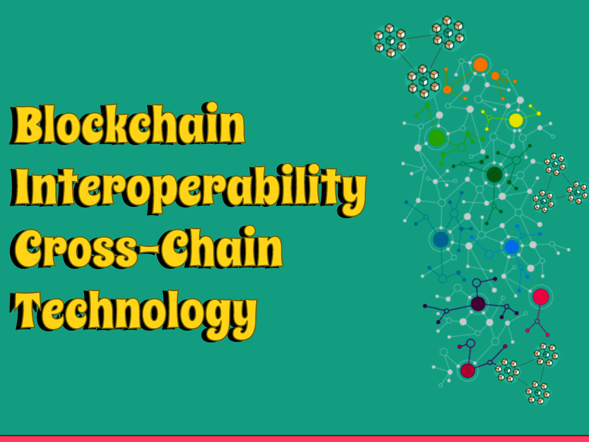

Welcome to the intriguing universe of blockchain interoperability, where the hindrances between various blockchain networks are being separated. In this article, we will investigate the idea of blockchain interoperability, with a particular spotlight on cross-chain innovation. Go along with us as we disentangle the significance, difficulties, and capability of cross-chain arrangements in accomplishing consistent joint effort between blockchains.
Section 1: The Requirement for Blockchain Interoperability
1.1 Embracing an Associated Blockchain Ecosystem
As the quantity of blockchain networks keeps on developing, there is a rising requirement for these organizations to convey and team up with one another. Blockchain interoperability guarantees that different organizations can flawlessly trade data, resources, and administrations, cultivating an associated and dynamic biological system.
1.2 The Test of Siloed Blockchains
Without interoperability, blockchain networks work in storehouses, restricting their true capacity for boundless reception and joint effort. Cross-chain innovation assumes a critical part in beating these obstructions and opening the genuine force of blockchain by empowering the free progression of information and worth across various organizations.
Section 2: Figuring out Cross-Chain Technology
2.1 What is Cross-Chain Technology?
Cross-affix innovation alludes to the instruments and conventions that work with the trading of resources, information, and brilliant agreements between various blockchain networks. It permits blockchain stages to associate and interoperate flawlessly, rising above the restrictions of individual chains.
2.2 The Job of Interoperability Protocols
Interoperability conventions act as the foundation of cross-chain innovation, giving the guidelines and norms to get and effective correspondence between blockchains. Instances of famous interoperability conventions incorporate Universe Organization, Polkadot, and Interledger.
Section 3: Difficulties and Arrangements in Cross-Chain Technology
3.1 Agreement and Validation
Accomplishing agreement across various blockchains with differing agreement components is a huge test in cross-chain innovation. Arrangements like spanning instruments, sidechains, and decentralized prophets assist with guaranteeing the legitimacy and uprightness of exchanges across different chains.
3.2 Security and Trust
Keeping up with security and trust is central while cooperating with various blockchain networks. Cross-chain innovation utilizes cryptographic procedures, multi-signature conspires, and secure correspondence channels to safeguard resources and information during cross-chain exchanges.
3.3 Versatility and Performance
Guaranteeing versatility and elite execution across various blockchains is fundamental for effective cross-chain tasks. Strategies, for example, sharding, layer-two arrangements, and advanced exchange steering are utilized to improve the speed and adaptability of cross-chain exchanges.
Section 4: Opening the Capability of Cross-Chain Technology
4.1 DeFi and Cross-Chain Finance
Cross-chain innovation changes decentralized finance (DeFi) by empowering the consistent exchange of resources and liquidity across different blockchain stages. It opens up additional opportunities for composability, permitting clients to use the best elements of various DeFi applications.
4.2 Interoperable NFT Ecosystems
Cross-chain innovation extends the opportunities for non-fungible tokens (NFTs) by empowering interoperability between various NFT environments. It considers consistent symbolic exchanges, partial possession, and expanded liquidity for NFT commercial centers.
4.3 Cooperative Blockchain Networks
Cross-chain innovation cultivates cooperation between blockchain networks, empowering them to consolidate their assets and assets. This joint effort speeds up advancement, works with cross-industry associations, and advances the improvement of interoperable blockchain arrangements.
Conclusion
Blockchain interoperability, explicitly through cross-chain innovation, is an imperative step towards making an associated and cooperative blockchain environment. By separating the obstructions between various blockchain networks, we open new open doors for development, effectiveness, and broad reception.
Embracing cross-chain innovation will push the blockchain business forward, changing the manner in which we cooperate with decentralized applications and upsetting different areas of the economy.